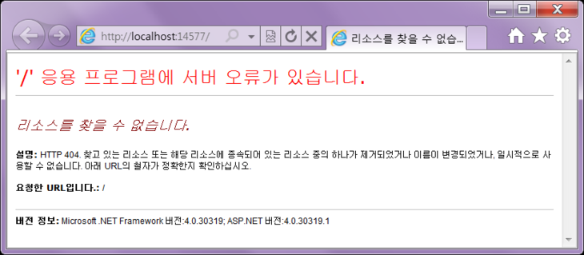

이 글은 2011. 1. 18일 작성된 글로 MVC3을 기준으로 작성되었다. 그 뒤에도 MVC가 많이 발전해왔다.
MVC를 모르는 나로써는 참조정도로 공부하려한다.
프로젝트는...? 19년도 작성된 글을 참조하여 작성하여서 MVC3이 아닐지도.. 아무튼 MVC5까지 발전됨.
『ASP.NET MVC3』 입니다. Visual Studio 2010에 기본적으로 깔려있지 않습니다.
아래의 URL로 가셔서 상콤하게 다운받아 설치해주시기 바랍니다. 'ㅁ'
『 http://www.asp.net/mvc/mvc3 』
"
Lesson Start
그럼 설치가 되셨다는 가정하에...
시작합니다 ~
"
Empty 프로젝트로 만들어 주시는 것이 편하답니다. 'ㅁ' .. !
『View Enging』으로는 두가지가 있는데요.
『Razor & ASPX 』입니다. Razor를 사용하도록 하겠습니다. ㅎㅎ
제가 원래 ASP.NET MVC보다는 Rails를 좋아하는데,
Razor를 접한 이후로는 ASP.NET MVC가 점점 좋아지려구 합니다. +ㅁ+
"
그럼 다음과 같이 프로젝트가 만들어 진답니다.
"
실행시키시면 아무것도 없어요.
왜냐면, 아무것도 안 했으니까요 'ㅁ'
"
컨트롤러를 추가해줍니다.
"컨트롤러가 뭔가요 ㅇㅁㅇ"
『일단 만드시죠 'ㅁ'』
이름은 대충 주겠습니다.
URL 에 대해서 조금 설명하기 위해서인데요.
프로젝트 만들기 귀찮아서 하나로 계속 가고 싶으신 분은 여기서 『HomeController』를 만들어서 진행하시면 좋겠습니다. ㅎㅎ
그럼 다음과 같은 녀석이 나온답니다.
있던 것을 다음과 같이 간단하게 바꾸어줍니다. ㅎㅎ
그리고 복사신공을 사용해서 ㅇㅁㅇ
다음과 같이 구성해줍니다 .. !
실행을 합니다 .. !
에구머니나, 근데 아무 것도 안떠요 .. !
『ㅇㅁㅇ .. HomeController 로 하신 분은 뜨실겁니다. ㅎㅎ』

URL을 다음과 같이 수정해줍니다.
그럼 다음 페이지가 나옵니다.
이어서, 다음 URL입니다.
오 ㅇㅁㅇ, 나오죠 .. ?
여기서 오른쪽 버튼 누르고 소스보기 누르시면
위에서 친 것이 그대로 쓰여있을 것이랍니다. ㅎㅎ
역시나 다음 페이지로 가줍니다.
그럼 이렇게 떠요 ㅇㅁㅇ ... !
이와 같이 MVC에서 Controller Class를 상속받아 만들어진 녀석은 하나의 방을 가지고 페이지를 가지게 된답니다.
그리고 그 안에 있는 public 메소드를 액션이라고 합니다.
하나의 페이지를 의미한다고 생각하시면 됩니다. ㅎ (후에 public이지만 액션이 아닌 녀석이 나오기는 하지만..)
그리고 그 두녀석은 다음과 같은 형태의 URL로 구성이 된답니다. ㅎㅎ
『http://○○.com/컨트롤러명/액션명』
음 ㅇㅁㅇ ... 참고적으로 index라는 URL은 생략이 가능하구요.
HomeController 로 만드셨다면
『http://localhost:○○/』이렇게 치시면 그냥 『/Home/Index』가 나오실 거랍니다.
역시나 먼 후에 살펴보도록 하구요 ㅎㅎ
* 질문과 답변
질문 1 : 『 http://○○.com/컨트롤러명/액션명 』
접근 방법 알수 있을까요? 참조 사이트라도.. 즉 url 을 위 처럼 쳤을때( http://localhost:14577/Rint/test2 ) 어떻게
Controllers/RintController.cs 의 test2 로 접근하게 되는지 알고 싶어요..
답 : 프로젝트 내의 파일 중 global.asax가 있을 것입니다.
여기 보시면 RegisterRoutes() 메서드가 있습니다.
URL 요청이 오면 RegisterRoutes() 메서드에서 등록한 형태를 찾아 직접적으로 쓰레드를 나누어 실행하게 됩니다.
출처 : https://blog.naver.com/rintiantta/40121555538